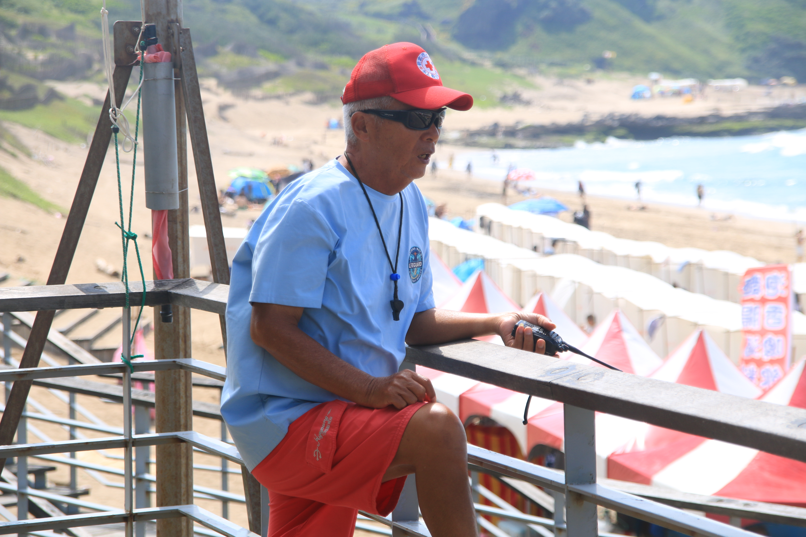
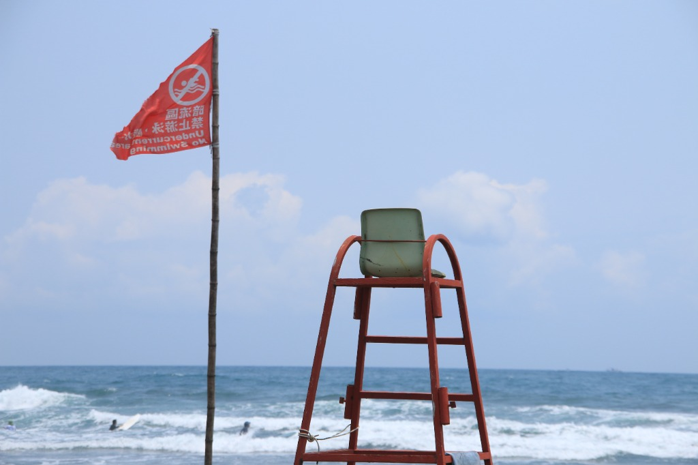
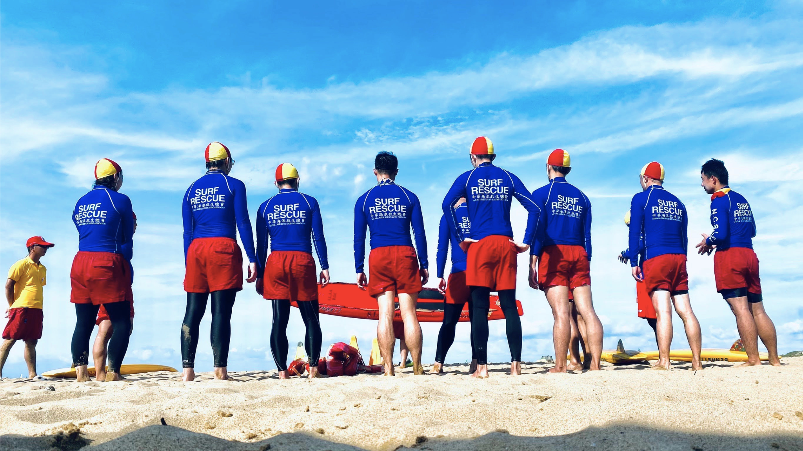

低薪及高風險成推力 救生人才難久留
談及救生員缺工主因，薪資水準是一大關鍵。目前兼職救生員的時薪落在200至250元，月薪超過四萬的更是少之又少，部分水域還會有淡旺季之分，讓救生員的工作生態也因此越趨季節性，除影響留任意願，也進一步導致臺灣難以如法炮製國外常見的救生員檢定分級制度。劉家豪無奈地說：「臺灣連考出一張證照都有問題，更何況是不同級數的好幾張？」臺灣的救生員也缺乏升遷管道，曾擔任海邊救生員三年的蕉哥（化名）提出他的觀察，「因為救生員再往上做，你可能只能做救生主管，並沒有太往上的發展空間。」因此許多救生員選擇跨足教學領域，或是直接轉職當游泳教練，也讓救生員的需求產生缺口。
「因為這個行業，大家的既定印象就是你沒事坐在那邊，我幹嘛花那麼多錢請你？比較把救生員看成是保全吧。」國立政治大學游泳館管理員芳姐（化名），道出社會大眾對救生員的觀感。蕉哥投入此行業多年，也分享身邊親友的看法，「他們會覺得你在這邊曬太陽、看風景、看很多人在玩水，很愜意的樣子。」在這樣的社會觀感基礎上，江柏億認為媒體環境對救生員不甚友善，導致他們懷抱救人理想的初衷逐漸被消磨。「大家會有英雄夢，覺得救援很帥，覺得我有社會責任當這個角色，但其實這塊一直沒有被重視。」顯示救生員與同樣擔起救生責任的消防、醫護人員相比，普遍難認為是「英雄」。

救生員留不住年輕人才，當發生意外時極需體力與速度，資深救生員雖然有豐富經驗，但也將愈來愈吃力。
圖／林家慶攝
「如果你的薪水跟一般服務業相比差不多，但人家不用背法律責任，那我為什麼要做一個有法律風險的工作？」蕉哥認為救生員肩上背負的責任是讓很多人卻步的主因。投入救援時，除了自己的人身安全外，若是沒成功救溺，更會面臨延伸的官司。他分享，「每個個案實際的法律責任不太一樣，但不管如何，救生員的賠償金額可能都是七位數起跳。」在低廉的薪資面前，賠償金就如同天文數字，讓救生工作不僅是體力與技術的考驗，更需承擔極高的心理壓力。
多重因素交織下，開放水域救生員缺工問題日益嚴重。林智明觀察，目前開放水域救生員出現明顯的人力斷層，逐漸浮現年齡結構失衡的現象，「老一輩知道要怎麼拉風浪流的警戒線，但沒有年輕人可以傳承。」雪上加霜的是，救生員需定期展延證照的制度，不斷降低實務工作者的續職意願，讓整體人力更加吃緊。當缺工問題反映在現狀上，中華海浪救生總會第七屆理事長張中銘點出，「業者如果不鋌而走險違法超收遊客，或是降低救生員比例來維持營運，就只能選擇暫停營業。」廖國盛也進一步說明，「結果就是很多地方連只有協會證照的救生員都拿來用。」

現行法規對開放水域救生員聘僱制度的規範仍有不足，而救生員人力短缺的現況，也使水域安全維護責任在實務上更多轉由巡護員及民間自主力量承擔。
圖／林家慶攝
「通過率降低其實也有好處，現在很多地方的時薪已經開到250元以上了。」林智明苦笑地說。但據他觀察，最有效的誘因仍是提升薪資水準，「只要錢到位了，一切問題都能迎刃而解。」撇除薪資結構的問題，劉家豪點出，救生員一旦踏入場館值班，即具備法律上的「保證人地位」（註）。不過，他主張救生員若在救援過程中已施以標準救援程序，就不應使其獨自承擔涉訟風險，他說：「可以跟醫護人員一樣有合理免責的機制，或是政府替我們啟動專屬的保險制度。」如此一來，便有可能降低求職者對於安全的疑慮，減緩缺工問題。
註：指法律上因特定職務或身分，而負有防止他人生命、身體法益受侵害之義務；若未履行該義務而導致損害發生，可能需負刑事責任。
除了法律的改制，蕉哥也提出可以從教育著手，他認為學習游泳是臺灣孩子們的常態，但教學和實務上仍存在落差。因此他創立「像一條魚LikeAFish」品牌，以自身經驗推廣防溺教育。希望能讓開放水域安全受到普遍重視，如此能降低溺水事故的發生率，同時也能減緩救生員的負擔。

救生員的存在，不僅為民眾打造安心的水域，更是臺灣從海島國家邁向海洋國家的基石。
— 張中銘說到。 圖／中華海浪救生總會提供
臺灣身為一個海島國家，無法遠離溪流和海洋，但真正的水域安全，不應只建立在泳池考出的證照，救生員也不該只是單純仰賴個人使命感支撐的行業。救生員肩負了生命的重量，而政府也應建立完善保障，成為他們願意在險峻水域中投入生命的後盾。
採訪：王翊丞、呂詠倢、熊子萱、林家慶
文字：王翊丞、呂詠倢、熊子萱、林家慶
攝影：王翊丞、熊子萱、林家慶
製圖：呂詠倢、林家慶、王翊丞
數據分析：熊子萱
網站架設：王翊丞
網頁設計：王翊丞、呂詠倢、熊子萱、林家慶
網頁製作：王翊丞、呂詠倢、熊子萱、林家慶
誠摯感謝：廖家君、吳國和、劉邦禾、渚樺(化名)、闕河聖、Benny(化名)、廖國盛、吳寶昇、劉家豪、許金德、江柏億、林智明、台灣游泳池事業協會、范清樂、蕉哥（化名）、芳姐（化名）、張中銘、中華民國水適能訓練協會、中華海浪救生總會協助專題順利完成
＊本專題使用報導者數位敘事元件庫系列元件＊
2026年政大大學報 ｜ 發布日期：2026年6月30日